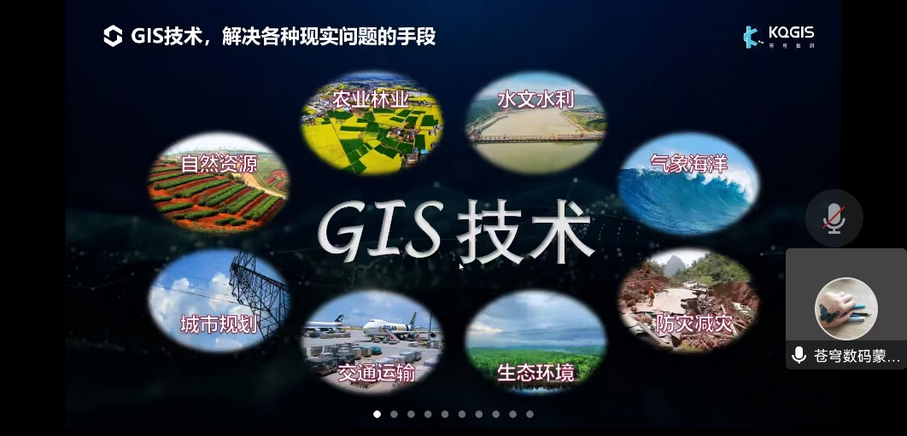

提供GIS技术培训服务，帮助企业和个人掌握地理信息系统的使用和开发技能
我们提供GIS技术培训服务，帮助企业和个人掌握地理信息系统的使用和开发技能。GIS技术培训是我们的重要服务之一，能够为客户提供专业的技术支持。
我们的培训课程包括GIS基础理论、GIS软件操作、WebGIS开发、空间数据分析等多个方面，能够满足不同客户的需求。
我们的培训讲师都是具有丰富经验的GIS专家，能够为客户提供专业的培训服务。我们的培训服务广泛应用于政府、企业、高校等领域，为GIS技术的推广和应用做出了贡献。

由具有丰富经验的GIS专家担任培训讲师。
提供全面的GIS技术培训课程，满足不同客户的需求。
注重实践操作，帮助学员掌握实际技能。
为完成培训的学员颁发培训证书。